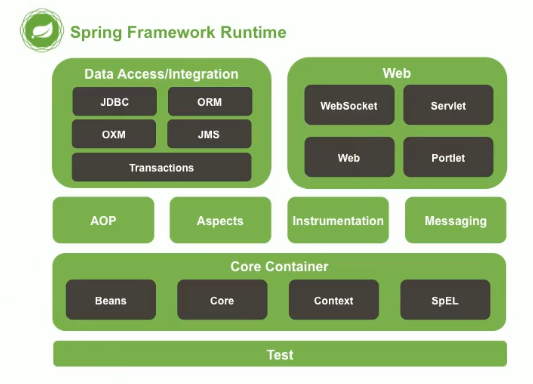

SPRING框架
什么是框架？
框架是一种高度抽取可重用代码的一种设计
框架一定具有高度的通用性。
比如说 我们有时候会写一些Utils文件，比如JDBCUtils.java 抽取了之后还要打包，打包了可以变成jar包，jar包就是一些工具类。比如commons-fileupload
我们可以尝尝把一些高度重用的东西抽取出来，比如事务控制，强大的servlet，还有项目中的一些工具。把这些东西整体抽取出来，可以形成具有通用性的东西。
书城的项目，抽取出来的时候还能够适用于金融类的项目，具有通用性的东西，是多个可重用的模块的集合，形成一个某个领域的整体解决方案，这个就是框架，框架就是半成品软件。
SPRING框架的定义：SPRING框架是一个容器框架，用以管理service、DAO等所有组件。
正所谓容器 什么都可以往里面装，减少了配置，SPRING抽取了容器的功能
两个重要的东西：IOC和AOP
是一个容器，用来管理所有的组件（就是具有功能的类）。
Spring 的优良特性：
- 非侵入式：不依赖于API，简单来说说以前就是要懂API 现在不用懂也可以
- 依赖注入：IOC
- 面向切面编程（AOP）
- 容器框架
- 组件化：可以不用导入所有的包
- 一站式
AOP 和IOC
SPRING有很多个jar包，分成几个模块。

从下往上看，依次是：
- TEST 单元测试模块
- Core Container ： 核心容器（IOC）；黑色代表这部分功能由哪些jar包组成；要使用这个部分的完整功能，这些jar包都需要导入。**
SpEL： Spring Expression** - AOP和Aspects共称为面向切面编程模块
- Instrumentation和Messaging 是设备整合相关（不重要）
- 左上角：数据访问/集成模块。很类似操作数据的。JDBC 操作数据库的，ORM（Object Relation Mapping）对象关系映射的（查询数据库，将查询结果封装成对象）、Transactions 事务的（简写成spring-tx包）；里面
jms和oxm是集成相关的 Web：Spring开发WEB应用的模块，包括websocket（新的技术）、Servlet、Web（对应包webMVC）、Portlet
用哪个模块，导哪个包！